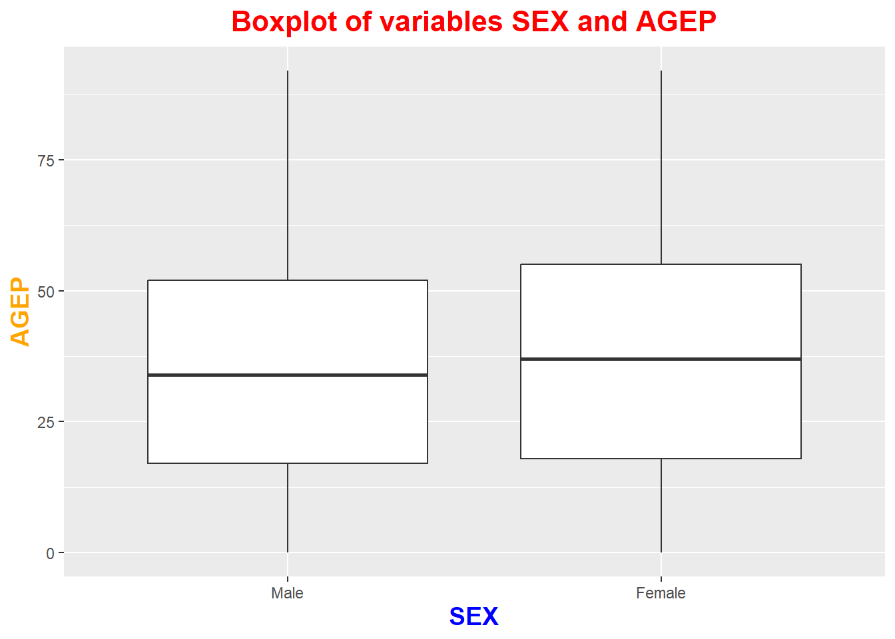

ALLOWED_NUMERIC <- c("AGEP","GASP","GRPIP","JWAP","JWDP","JWMNP") # PWGTP always added
ALLOWED_CATEG <- c("FER","HHL","HISPEED","JWTRNS","SCH","SCHL","SEX")
GEO_FIELD <- c("All"=NA, "Region"="REGION", "County"="COUNTY", "Division"="DIVISION", "State"="ST")
ALLOWED_YEARS <- 2010:2022ST 558 Project 1
Introduction to the PUMS API
The United States Census Bureau, operating under Titles 13 and 26 of the U.S. Code, are charged with collecting demographic information about people and families living in the US. They are dedicated to providing quality data, which is crucial as they are used for vital tasks such as
The US Census Bureau has maintained a public Application Programming Interface (API) since 2012 to allow users to send queries to their databases. The API, called the Public Use Microdata Sample (PUMS) API, is accessible by using a specific URL, which need be constructed to contain all the elements of the query. In this instance, the API is the Public Use Microdata Sample (PUMS) API, which utilizes data collected from the American Community Survey (ACS).
As stated, the specific variables and terms in the URL used are what define the query and state the terms of the request. The structure of this is:
| Element | Code Example | Use |
|---|---|---|
| Root URL | https://api.census.gov/data/2022/acs/acs1/pums? |
Root address for where the queries should be addressed, and the primary target of the GET() request. This specifically targets1) data from 2022, 2) their ACS data set, and 3) more specifically the 1-year ACS estimates. |
| Query parameters |
|
|
| Additional Filters | &VAR=Value |
Any other additional filters that would allow a user to refine the search further and create more specificity. |
Our goal is to write a function that will query this PUMS API for a selection of variables and perform some manipulations and processing of the resulting data sets.
Establishing the Query Function
We need to construction a function to query the API [use the GET() function from library(httr)]. A helper function will be needed to take what is returned by get to turn it into a “nice tibble”.
This will be a function to query the API that allows the user to specify:
Year of survey (default is 2022; must be a valid value between 2010 and 2022).
The numeric variables that could be queried for are:
PWGTP- PUMSpersonweight, indicating the number of people that a single “person” record could “speak” for. (This variable must be included, and can not be removed by the user.)AGEP- Person age (default value along withPWGTP, but this one can be changed)GASP- The cost of gas for housing during the 12-month period reviewed.GRPIP- Gross Rent as a Percentage of household IncomeJWDP (time)- Time of departure for work.JWAP (time)- Time of arrival at work.JWMNP- The number of minutes spent commuting to work.
The categorical variables that could be queried for are:
SEX- This was intended to refer to biological sex of the survey responder, but this survey is self-reporting and voluntary. This is to be the default categorical variable, and multiple can be selected.FER- Refers to “fertility”, an indicator variable for whether a woman has given birth within the previous 12 months from the survey. This is only valid for women aged 15 to 50.HHL- The household language.HISPEED- Indicates if the residence has high-speed internet (fiber optic, DSL, etc.)JWTRNS- The primary means of transportation to go to work.SCH- School enrollment, this indicates whether a person is currently enrolled in school; and what level they may be in.SCHL- The level of degree/schooling a person has received.
The geographic levels (
All,Region,Division,State) should be specified.Any numeric, categorical, or geographic levels not specified above will be disregarded.
Generation of the API access function
Constants
The first step for generation of the function will be to ensure the packages to include, and our constants, are clearly defined. In this case, the constants are the allowable numeric and categorical variables as specified above.
Required packages
Specific packages will need to be included, to allow us to utilize HTTP protocols to access the API. The data would be transferred as JSON packets, which will need to be translated into a readable format. Finally, the resulting data frames will need to be able to be manipulated and processed for further accessibility.
library(httr) # For accessing the API with HTTP requests
library(jsonlite) # For interpreting data received from API into a readable format.
library(tidyverse) # For processing and manipulation of the data.Request validation
The user will be able to define some of the details of the request. These are: year, numeric variables, categorical variables, geographic area, and some filtering variables that would allow further sub-setting. Prior to any request being submitted to the API, the requested input needs to be validated to confirm it fits within required parameters. A helper function check_inputs will review the inputted parameters and stop activity if any items are out of scope.
# Confirm that input request is within allowable parameters
check_inputs <- function(year, numeric_vars, cat_vars, geo, subset) {
# Year must be a single integer in our allowed range
if (!is.numeric(year) || length(year) != 1 || !(year %in% ALLOWED_YEARS)) {
stop("Year must be an integer in 2010–2022.")
}
# At least one numeric variable (besides the weight PWGTP, which we auto-include)
if (length(numeric_vars) < 1) stop("provide at least one numeric variable.")
# Only allow variables listed in the spec
bad_num <- setdiff(numeric_vars, ALLOWED_NUMERIC)
if (length(bad_num)) stop("unknown numeric variable(s): ", paste(bad_num, collapse = ", "))
if (length(cat_vars) < 1) stop("provide at least one categorical variable.")
bad_cat <- setdiff(cat_vars, ALLOWED_CATEG)
if (length(bad_cat)) stop("unknown categorical variable(s): ", paste(bad_cat, collapse = ", "))
# Geography must be one of these levels
if (!(geo %in% names(GEO_FIELD))) {
stop("geo must be one of: ", paste(names(GEO_FIELD), collapse = ", "))
}
# If a subset is given, it must match the chosen geography and be coded as API codes
if (!is.null(subset)) {
if (geo == "All") stop("subset cannot be used when geo = 'All'.")
if (!is.character(subset) || any(!nzchar(subset))) {
stop("subset must be a character vector of codes for the chosen geography.")
}
}
invisible(TRUE)
}Create the URL for accessing API
As stated, the specifics for a query submitted to the API are done through so through the contents of the URL. The next functions generate the URL according to the search terms provided.
# Form the base of the URL according to the year of the database to be used (defaults to 2022)
pums_base <- function(year=2022) sprintf("https://api.census.gov/data/%d/acs/acs1/pums", year)
# Building the Census API URL
build_url <- function(year, get_vars, geo, subset_codes) {
base <- pums_base(year)
geo_field <- GEO_FIELD[[geo]]
# Always include PWGTP (weight). Include geo field so it appears in results.
get_list <- unique(c(get_vars, "PWGTP"))
# Encode only the list of columns after get=
url <- paste0(base, "?get=", URLencode(paste(get_list, collapse = ",")))
# If user asked for a subset (e.g., specific states), add "&ST=37,45"
if (!is.na(geo_field) && length(subset_codes)) {
if (geo == "County") {
url <- paste0(url, "&for=County:",subset_codes[1],"&in=State:",subset_codes[2])
} else { url <- paste0(url, "&for=", geo, ":", paste(subset_codes, collapse = ",")) }
}
url
}Metadata Translation Functions
Assuming the variable inputs are appropriately within scope, the request would submitted to the API. The metadata that is returned would be coded (even after translating from JSON). Some helper functions are needed to translate these labels into human-readable variable names.
# Get the variable dictionary (metadata) for a given year.
# Returns a big list, or NULL if the request fails.
get_variables_metadata <- function(year) {
# Build the variables.json URL for the chosen year
url <- paste0(pums_base(year), "/variables.json")
# Make a GET request
resp <- httr::GET(url)
# If HTTP error (e.g., 404/500), just return NULL quietly
if (httr::http_error(resp)) return(NULL)
# Pull the response text and convert from JSON to an R list
txt <- httr::content(resp, as = "text", encoding = "UTF-8")
meta <- jsonlite::fromJSON(txt, simplifyVector = FALSE)
return(meta)
}
# From the metadata list, build a simple lookup (named character vector)
# for a variable: names = codes, values = human-readable labels.
# If the variable has no labels, return NULL.
# label_lookup(): always return named {code -> label}
label_lookup <- function(meta, var) {
if (is.null(meta) || is.null(meta$variables)) return(NULL)
entry <- meta$variables[[var]]
if (is.null(entry) || is.null(entry$values)) return(NULL)
vals <- entry$values
# 0) If it's already a nice data.frame with code/label columns
if (is.data.frame(vals)) {
code_col <- intersect(c("item","value","code","id"), names(vals))[1]
label_col <- intersect(c("label","text","description","name"), names(vals))[1]
if (!is.na(code_col) && !is.na(label_col)) {
labs <- as.character(vals[[label_col]])
names(labs) <- as.character(vals[[code_col]])
return(labs)
} }
# 1) Try to normalize any odd list shape into a data.frame
# by round-tripping through JSON with simplifyVector = TRUE
norm <- try(
jsonlite::fromJSON(jsonlite::toJSON(vals, auto_unbox = TRUE),
simplifyVector = TRUE),
silent = TRUE)
if (!inherits(norm, "try-error")) {
# A) data.frame with columns
if (is.data.frame(norm)) {
code_col <- intersect(c("item","value","code","id"), names(norm))[1]
label_col <- intersect(c("label","text","description","name"), names(norm))[1]
if (!is.na(code_col) && !is.na(label_col)) {
labs <- as.character(norm[[label_col]])
names(labs) <- as.character(norm[[code_col]])
return(labs)
} }
# B) list with vectors item/label
if (is.list(norm) && !is.null(norm$item) && !is.null(norm$label)) {
labs <- as.character(norm$label)
names(labs) <- as.character(norm$item)
return(labs)
} }
# 2) As a last resort, handle named list/vector directly
if (is.list(vals) && !is.null(vals$item) && !is.null(vals$label)) {
labs <- as.character(vals$label)
names(labs) <- as.character(vals$item)
return(labs)
}
if (!is.null(names(vals))) {
labs <- vapply(vals, function(x) {
if (is.list(x)) as.character(x[[1]])[1] else as.character(x)[1]
}, character(1))
names(labs) <- names(vals)
return(labs)
}
# If there is no reliable mapping, then return null.
NULL
}
# Default labels we can fall back to if metadata is awkward
default_labels <- function(var) {
if (var == "SEX") return(c(`1`="Male", `2`="Female"))
if (var == "SCHL") return(c(`16`="Regular high school diploma",
`21`="Bachelor's degree"))
NULL
}
# Is the label map usable for these codes? (must have names, and at least one match)
valid_labs <- function(codes_chr, labs_named) {
if (is.null(labs_named) || is.null(names(labs_named))) return(FALSE)
nm2 <- sub("^0+", "", names(labs_named))
codes2 <- sub("^0+", "", codes_chr)
any(codes2 %in% nm2)
}
map_labels <- function(codes_chr, labs_named) {
if (is.null(labs_named)) return(rep(NA_character_, length(codes_chr)))
# try exact name match first
out <- unname(labs_named[codes_chr])
# if all NA, try matching after stripping leading zeros on both sides
if (all(is.na(out))) {
nm2 <- sub("^0+", "", names(labs_named))
codes2 <- sub("^0+", "", codes_chr)
idx <- match(codes2, nm2)
out <- ifelse(is.na(idx), NA_character_, unname(labs_named)[idx])
}
out
}
# turn raw strings into useful R columns---------------------------------
coerce_columns <- function(df, year, numeric_vars, cat_vars, geo) {
meta <- get_variables_metadata(year)
# 1) plain numeric variables (JWAP/JWDP handled below)
plain_numeric <- setdiff(numeric_vars, c("JWAP","JWDP"))
for (v in plain_numeric) {
if (v %in% names(df)) df[[v]] <- suppressWarnings(as.numeric(df[[v]]))
}
# 2) time variables -> numeric midpoints (prefer labels; fallback numeric)
for (tv in intersect(c("JWAP","JWDP"), numeric_vars)) {
if (tv %in% names(df)) {
labs_raw <- label_lookup(meta, tv)
labs <- if (valid_labs(df[[tv]], labs_raw)) labs_raw else default_labels(tv)
lbl <- map_labels(as.character(df[[tv]]), labs)
if (all(is.na(lbl))) {
df[[tv]] <- suppressWarnings(as.numeric(df[[tv]])) # fallback if still no match
} else {
df[[tv]] <- vapply(lbl, midpoint_from_label, numeric(1))
} } }
# 3) categorical variables -> factors with readable labels
for (cv in cat_vars) {
if (cv %in% names(df)) {
labs_raw <- label_lookup(meta, cv)
labs <- if (valid_labs(df[[cv]], labs_raw)) labs_raw else default_labels(cv)
lbl <- map_labels(as.character(df[[cv]]), labs)
if (all(is.na(lbl))) {
df[[cv]] <- factor(df[[cv]]) # keep codes if we truly can’t map
} else {
df[[cv]] <- factor(lbl, levels = unique(unname(labs)))
} } }
# 4) weights numeric
if ("PWGTP" %in% names(df)) df$PWGTP <- suppressWarnings(as.numeric(df$PWGTP))
# 5) label the geography field too (if present)
geo_field <- GEO_FIELD[[geo]]
if (!is.na(geo_field) && geo_field %in% names(df)) {
labs_raw <- label_lookup(meta, geo_field)
labs <- if (valid_labs(df[[geo_field]], labs_raw)) labs_raw else default_labels(geo_field)
if (!is.null(labs)) {
lbl <- map_labels(as.character(df[[geo_field]]), labs)
if (all(is.na(lbl))) {
df[[geo_field]] <- factor(df[[geo_field]])
} else {
df[[geo_field]] <- factor(lbl, levels = unique(unname(labs)))
}
} else {
df[[geo_field]] <- factor(df[[geo_field]])
} }
df
}The above helper functions are each set up to submit URL requests, receive the data, and process them into readable formats. The following functions pums_get_one_year and pums_get_multi_year process and submit the requests based on whether the query is for one year of data, or for multiple years.
# pulling one year of PUMS---------------------------------
pums_get_one_year <- function(year, numeric_vars, cat_vars, geo, subset = NULL) {
# 1) validate inputs
check_inputs(year, numeric_vars, cat_vars, geo, subset)
# 2) build URL (PWGTP auto-added in build_url)
get_vars <- unique(c(numeric_vars, cat_vars))
subset_codes <- if (is.null(subset)) character(0) else subset
url <- build_url(year, get_vars, geo, subset_codes)
# 3) call the API
resp <- httr::GET(url)
if (httr::http_error(resp)) {
stop("API request failed. Status: ", httr::status_code(resp))
}
# 4) parse JSON (first row = header)
txt <- httr::content(resp, as = "text", encoding = "UTF-8")
arr <- jsonlite::fromJSON(txt, simplifyVector = TRUE)
if (NROW(arr) < 2) stop("API returned no data for these parameters.")
header <- arr[1, ]
dat <- tibble::as_tibble(as.data.frame(arr[-1, , drop = FALSE],
stringsAsFactors = FALSE))
names(dat) <- header
# 5) coerce + label
dat <- coerce_columns(dat, year, numeric_vars, cat_vars, geo)
# 6) tag and return
as_census(dat)
}
# pulling multiple years (loop + bind rows)------------------------
pums_get_multi_year <- function(years, numeric_vars, cat_vars, geo, subset ) {
if (!is.numeric(years) || any(!(years %in% ALLOWED_YEARS))) {
stop("all years must be in 2010–2022.")
}
parts <- vector("list", length(years))
for (i in seq_along(years)) {
y <- years[i]
one <- pums_get_one_year(y, numeric_vars, cat_vars, geo, subset)
one$year <- y
parts[[i]] <- one
}
out <- dplyr::bind_rows(parts)
as_census(out)
}
# Make returned tibbles carry a 'census' class (for your later summary/plot)
as_census <- function(df){
class(df) <- c("census", class(df))
df
}Final User Function
A single function can be utilized then that will take the user’s request, and submit it to either of the above functions based on whether the years variable contains a single year or multiple years. This function takes the form
pums(years, num_vars, cat_vars, geo, subset)yearscan be a single year or a vector of years, between 2010-2022, inclusive.num_varsis either a singular, or vector of, numerical variables, from the list above. Default isAGEP. (PWDGT is included by default.)cat_varsis a singular, or vector of, categorical variables. Default isSEX.geois the geographical area of interest, and could be either a “Region”, “Division”, “State”, or “All”. If any option (other than ‘all’) is chosen, then the final variablesubsetmust be declared as well. This is the FIPS number that refers to the specific locale, for instance “37” refers to North Carolina. (This must be passed as a string - remember to include it in quotes!)
pums <- function(year = 2022,
num_vars = c("AGEP"),
cat_vars = c("SEX"),
geo = "All",
subset = NULL) {
# Confirm whether `year` is a single year, range of years, or something undecipherable.
if (length(year) == 1 & is.numeric(year)) {
pums_get_one_year(year, num_vars, cat_vars, geo, subset)
} else if (length(year) > 1 & is.numeric(year)) {
pums_get_multi_year(year, num_vars, cat_vars, geo, subset)
} else stop("Unable to process `year` request. Please enter either a single integer for year or a vector of years.")
}Example 1 includes all default options. (Except geo=“State”, subset=“16”, this is for Idaho.)
pumsDemo1 <- pums(geo="State", subset="16")
head(pumsDemo1, n=20) |> knitr::kable()| AGEP | SEX | PWGTP | state |
|---|---|---|---|
| 36 | Male | 18 | 16 |
| 20 | Male | 25 | 16 |
| 19 | Female | 16 | 16 |
| 34 | Male | 182 | 16 |
| 27 | Male | 52 | 16 |
| 52 | Male | 58 | 16 |
| 20 | Female | 50 | 16 |
| 62 | Female | 13 | 16 |
| 26 | Male | 62 | 16 |
| 82 | Female | 15 | 16 |
| 22 | Male | 64 | 16 |
| 19 | Male | 19 | 16 |
| 21 | Female | 112 | 16 |
| 24 | Male | 4 | 16 |
| 36 | Male | 45 | 16 |
| 88 | Male | 21 | 16 |
| 81 | Male | 22 | 16 |
| 20 | Female | 57 | 16 |
| 24 | Female | 29 | 16 |
| 19 | Male | 54 | 16 |
Example 2 shows the same default options, but instead of 2022, it is a range of years 2013 through 2015 and only in Georgia. (State code “13”)
pumsDemo2 <- pums(year = 2013:2015, geo="State", subset="13")
head(pumsDemo2, n=20)|> knitr::kable()| AGEP | SEX | PWGTP | state | year |
|---|---|---|---|---|
| 55 | Male | 59 | 13 | 2013 |
| 54 | Female | 61 | 13 | 2013 |
| 16 | Female | 62 | 13 | 2013 |
| 40 | Female | 64 | 13 | 2013 |
| 6 | Female | 49 | 13 | 2013 |
| 55 | Female | 84 | 13 | 2013 |
| 76 | Female | 62 | 13 | 2013 |
| 81 | Male | 60 | 13 | 2013 |
| 21 | Male | 86 | 13 | 2013 |
| 65 | Female | 10 | 13 | 2013 |
| 78 | Female | 76 | 13 | 2013 |
| 55 | Female | 83 | 13 | 2013 |
| 34 | Male | 37 | 13 | 2013 |
| 41 | Female | 23 | 13 | 2013 |
| 18 | Female | 53 | 13 | 2013 |
| 50 | Male | 53 | 13 | 2013 |
| 51 | Female | 62 | 13 | 2013 |
| 13 | Female | 53 | 13 | 2013 |
| 51 | Male | 61 | 13 | 2013 |
| 48 | Female | 72 | 13 | 2013 |
And example 3 - year 2018, examining numerical variables GASP and JWDP; and categorical variables HISPEED and SCHL. This time we are also declaring a region of interest, just in the state of North Carolina.
pumsDemo3 <- pums(year = 2018, cat_vars=c("HISPEED","SCHL"), num_vars=c("GASP","JWDP"), geo="State", subset="37")
head(pumsDemo3, n=20) |> knitr::kable()| GASP | JWDP | HISPEED | SCHL | PWGTP | state |
|---|---|---|---|---|---|
| 3 | 0 | 0 | NA | 11 | 37 |
| 3 | 0 | 0 | NA | 21 | 37 |
| 3 | 0 | 0 | Regular high school diploma | 4 | 37 |
| 3 | 0 | 0 | NA | 74 | 37 |
| 3 | 0 | 0 | NA | 3 | 37 |
| 3 | 0 | 0 | Regular high school diploma | 58 | 37 |
| 3 | 0 | 0 | NA | 66 | 37 |
| 3 | 0 | 0 | NA | 84 | 37 |
| 3 | 0 | 0 | NA | 77 | 37 |
| 3 | 0 | 0 | Regular high school diploma | 63 | 37 |
| 3 | 0 | 0 | NA | 19 | 37 |
| 3 | 0 | 0 | Regular high school diploma | 32 | 37 |
| 3 | 0 | 0 | NA | 71 | 37 |
| 3 | 0 | 0 | NA | 80 | 37 |
| 3 | 0 | 0 | NA | 25 | 37 |
| 3 | 0 | 0 | NA | 57 | 37 |
| 3 | 0 | 0 | NA | 91 | 37 |
| 3 | 0 | 0 | NA | 50 | 37 |
| 3 | 0 | 0 | Regular high school diploma | 13 | 37 |
| 3 | 0 | 0 | NA | 7 | 37 |
Writing generic function for summarizing
A summary function has been created to take our census objects and provide some statistical information.
The function was created in a way that took up to three variables:
The
censusitem generated in the function above;(OPTIONAL) A vector or single item with keyword
numerics=which will contain the numeric variables selected. An error is generated if the keywordnumerics=is used with a categorical column.
- Note: The
PWGTPvariable is not returned by default. This must be specifically requested innumerics=in order to call it.
- (OPTIONAL) A vector or single item with the keyword
categoricals=which will contain the categorical variables selected. An error is generated in the keywordcategoricals=is used with a numeric column.
The summary statistics returned will be the mean and standard deviation for each numeric variable, and the counts of each factor for categorical variables. These are returned as named lists, which are convenient for assigning to a variable and calling specific items.
# Usage: summary(item[, numerics = ..., categoricals = ...])
summary.census <- function(object, ...) {
args <- list(...)
# Stop if any keywords are included that are not `numerics` or `categoricals`
if (length(setdiff(names(args), c("numerics", "categoricals")))) {
stop("Keyword error: keywords must be `numerics=` or `categoricals=` to specify column summary request.")
}
# If `numerics` are provided, confirm they are actually numeric variables:
if ("numerics" %in% names(args)) {
if (!all(sapply(object[args$numerics], is.numeric))) {
stop("Selected numeric variables should all be numeric.")
} else { numerics <- args$numerics }
} else {
numerics <- names(select(all_of(object), where(is.numeric)))
# Unless it's specified, do not return PWGTP variable.
numerics <- numerics[!numerics %in% "PWGTP"]
}
# If `categoricals` are provided, confirm they're actually factors:
if ("categoricals" %in% names(args)) {
if (!all(sapply(object[args$categoricals], is.factor))) {
stop("Selected categorical variables should all be factors.")
} else { categoricals <- args$categoricals }
} else categoricals <- names(select(object, where(is.factor)))
# Reduce the input `object` to its selected variables.
object <- object |> select(numerics, all_of(categoricals))
# Function to produce `summary` reporting for census object
report <- function(obj) {
# Numeric variables: return a named list with `mean` and `sigma`
if (class(obj) == "numeric") list(mean=mean(obj), sigma=sd(obj))
# Categorical variables: return unique factors and their counts.
else if (class(obj) == "factor") table(obj)
# Fail if object class is neither numeric nor factor.
else stop("Improper class passed to report function.")
}
lapply(as.list(object), FUN=report)
}
pumsSummary <- summary(pumsDemo3)
pumsSummary$GASP
$GASP$mean
[1] 40.56964
$GASP$sigma
[1] 76.26581
$JWDP
$JWDP$mean
[1] 23.13976
$JWDP$sigma
[1] 32.61522
$HISPEED
obj
0 1 2
16365 72669 13489
$SCHL
obj
Regular high school diploma Bachelor's degree
17782 16092 Plot function
Similar to the summary adaptation above, a plot adaptation is also generated for census objects. This is designed to require a single categorical variable and a single numerical variable, as strings. The usage for this command is
plot(object, categorical="[Categorical Var]", numerical="[Numerical Variable]")
where [Categorical Var] and [Numerical Var] are substituted with the names of the desired columns of their requisite classes. In this example I will use pumsDemo2 to plot the AGEP against SEX. (Variable names should be passed as strings - remember the quotes!)
plot.census <- function(object, categorical, numerical) {
if (missing(categorical) | missing(numerical)) stop("plot.census requires both a categorical and a numerical variable.")
ggplot(object, aes(x=get(categorical), y=get(numerical), weight=PWGTP)) +
labs(x=categorical, y=numerical, title=paste0("Boxplot of variables ",categorical, " and ",numerical)) +
theme(plot.title=element_text(hjust=0.5, size=16, color="red", face="bold"),
axis.title.x=element_text(size=14, color="blue", face="bold"),
axis.title.y=element_text(size=14, color="orange", face="bold")) +
geom_boxplot()
}
plot(pumsDemo2, categorical="SEX", numerical="AGEP")